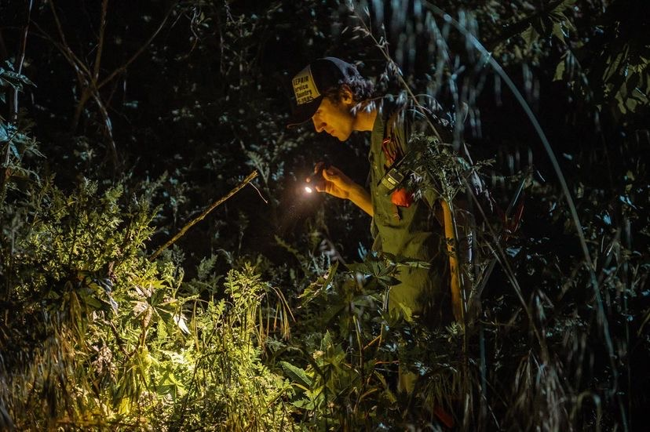

About Movie Animals
Movie Animals is a professional animal training and film services company based in Palmdale, California, with a rich family history in the film industry. Our founder, Derek Toth, is a distinguished third-generation animal trainer with deep-rooted family connections in the field. His career commenced early, working with animals in various media productions and following in his family's footsteps. Nurtured by his grandfather's legacy as a master falconer and founder of a prominent animal training company, Derek was immersed in an environment that fueled his passion for wildlife, environmental conservation, and animals. From a young age, Derek gained extensive experience in caring for and training a wide array of wild and domestic species, contributing to the family's enduring legacy in the motion picture industry.
With over a decade of expertise in animal training for film, video, and photography projects, Derek is a seasoned professional possessing a wealth of knowledge in on-set animal handling. His credits span commercials, TV shows, films, and video games for major brands and productions. Furthermore, Derek has honed his skills in venomous snake management and relocation during location shoots. Outside of work, he enjoys backcountry hiking and writing music. Derek's commitment to his passion is evident as he continues to make a mark in the entertainment industry with his balanced approach and dedication to the craft.
Our Services
Animal Training Services
We offer expert animal training services for film productions as well as personalized private training sessions for pets, ensuring their full potential is reached in a safe and nurturing environment.
Location Scouting and Wildlife Abatement
We help film productions find the perfect locations for their projects while ensuring rattlesnake and wildlife abatement for a safe and seamless on-set experience.
Portfolio
Some of Derek Toth's notable credits include commercials for Apple, Brooks Brothers, Dockers, Target, Dominos, Skechers, Mercy Health, Nationwide Insurance, Georgia Electric; TV shows like American Horror Story, The Rookie, S.W.A.T., 911:Lonestar; Films such as Palm Springs, Birds of Prey, The Starling, About My Father, various foreign films; and video games like Killzone 3 and Cabela's Big Game Hunter.
Contact Us
If you have any questions or would like to inquire about our services, please don't hesitate to reach out. You can contact Derek Toth at derek.toth@icloud.com. We work with all budgets.
